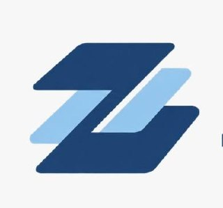

Inteligencia artificial útil
Asistentes con contexto, visión, voz y memoria para orientar conversaciones y convertir información en decisiones.
✦

ZOSA Conversemos ↗TECNOLOGÍA APLICADA DESDE POPAYÁN, COLOMBIA
ZOSA convierte problemas reales en productos digitales, sistemas de inteligencia artificial y automatizaciones que las personas pueden usar, entender y hacer crecer.
PERSONAS
PROCESOS
TECNOLOGÍA
La innovación no es sumar herramientas. Es diseñar una forma más clara de trabajar, atender y crear valor.
CAPACIDADES
Combinamos estrategia, ingeniería y diseño para pasar de una oportunidad a una solución que funciona en el mundo real.
Asistentes con contexto, visión, voz y memoria para orientar conversaciones y convertir información en decisiones.
Procesos que unen formularios, bases de datos, documentos, mensajería y equipos sin perder trazabilidad.
Webs, plataformas y herramientas claras que presentan una propuesta, facilitan una tarea y abren una relación.
Robótica, visión por computador y sistemas de datos cuando el reto requiere precisión, integración y criterio técnico.
PRODUCTOS Y PROYECTOS
Estas iniciativas muestran la variedad de problemas donde ZOSA ha puesto ingeniería, diseño e inteligencia artificial al servicio de personas y organizaciones.
ASISTENTE PERSONAL CON IA
Un asistente por voz y texto que ayuda a organizar información, trabajar con documentos y llevar tareas desde la conversación hasta la acción en la nube o el computador.
CONFIANZA DIGITAL
Proyecto de prevención de fraude orientado a revisar comprobantes de transferencias y reducir el riesgo de decisiones tomadas con información falsa.
ATENCIÓN Y VENTAS
Una propuesta de empleado virtual que combina conversación por voz y WhatsApp para acompañar atención, agenda y contexto comercial.
TERRITORIO Y TURISMO
Experiencia turística para descubrir lugares, patrimonio, gastronomía y rutas del Cauca con información útil para planear y recorrer.
También exploramos impacto social con Cora QR y Red de Ayuda, y desarrollamos ingeniería aplicada en automatización industrial, robótica y visión por computador.
Explorar portafolio de Ángel Garzón →FORMA DE TRABAJAR
Escuchamos el proceso real, las personas involucradas y el resultado que vale la pena mejorar.
Elegimos la tecnología por su utilidad, no por tendencia. Cada parte debe tener una razón clara.
Convertimos el diseño en un sistema verificable, con espacio para aprender y mejorar de forma responsable.
PRINCIPIO ZOSA
Trabajamos con empresas, emprendedores e iniciativas que quieren transformar una buena idea en una experiencia concreta para sus clientes, equipos o comunidades.
HABLEMOS
Cuéntanos qué estás intentando resolver. Una conversación inicial puede revelar por dónde empezar.
Escribir a ZOSA ↗angelgarzonsarzosa@gmail.com